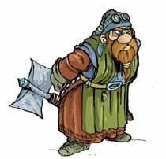

Forums galactiques > Assemblée Galactique : diplomatie officielle > Passage obligé : Présentations
Pages : 1 2 ... 16 17 18 ... 40 41
| Couvent Kûkan Respect diplomatique : 29  12/11 ETU 17:38  | Score : 11 Détails Yshico entra dans la salle. A sa figure pale et à son expression, on aurait cru qu'elle avait vu la mort dans le couloir...
Elle s'approcha de Miyazono, s'inclina devant elle et lui tendit un rouleau de soie. Miyazono le déroula et lu son contenu. "La planète Yesola que nous secourons depuis quelques mois sera détruite d'ici quelques heures. Nous devons faire quelques chose." Miyazono déposa le rouleau de soie sur une table. "Vous avez raison, la planète Yesola va être détruite, et nous y pouvons rien. La seule chose que nous pouvons encore faire, est de sauver le plus de vie. Le temple peut encore accueillir une centaine de personne. Recueillez tous ce que vous trouverai. Vous avez une heure..." Yshico resta bouche bée "Et ensuite maitresse, quels sont vos ordres... _ Yshico, ma jeune disciple saviez vous que le couvent de Kûkan à la capacité de voyagé à travers l'espace et le temps." Miyazono poursuivi dans c'est pensé: "Seulement, nous n'aurons pas assez d'énergie pour ralier Espérance... Ce sera donc dans la galaxie des exilés que nous allons devoir survivres..." Un hologramme apparu dans la salle du conseil... Miyazono Junko y apparu, vétu de son plus beau kimono "Bonjour, je suis la gardienne du couvent spaciaux temporel de Kûkan. Depuis des siècles, les geïshas de ce noble établisement recueille rodeur, exilés et simple voyager, et leur offre l'hospitalité. Nous venons en paix et nous désirons nous installé dans cette galaxie. Nous vous demandons à notre tour l'hospîtalité ..." fin de transmission... | ||
| Ozis Von Dölh Respect diplomatique : 26  12/11 ETU 19:44 | Score : 11 Détails L'assemblée était parcourue de cette rumeur persistante issue autant des conversations que des ronflements réguliers de certains représentants. Au sein de l'hémicycle le récepteur holographique émit ce discret et reconnaissable sifflement, annonciateur d'une transmition imminente.
Alors que les lumières se faisaient plus tamisées un homme brun d'une quarantaine d'année apparu, assi à un bureau que l'on pouvait qualifier d'archaïque. Des favoris et une fine moustache taillés avec soins, un sobre costume protocolaire, même la posture semblait avoir été étudiée pour donner une impression de solennité. Cependant les cernes et la voix trahissaient un état d'épuisement certain. " Salut à vous, nobles représentants des gouvernement galactiques. Je suis le Baron Ozis Von Dölh, j'ai l'honneur et le lourd devoir de diriger la Planète Peloris. Mon gouvernement est encore récent, vous l'ignorez sans doute mais nous sortons d'une longue période de chaos marqué par la guerre civile et les fléaux qu'elle entraîne immanquablement.Ce n'est que très recemment que nous avons réussis à réinstaurer les voies de communications. Cette intervention n'est sans doute pour vous qu'un épisode habituel de l'exercice diplomatique mais elle symbolise pour notre peuple le commencement d'une renaissance. Notre nation, à peine sortie d'une autarcie forcée, souhaite pouvoir reprendre, en votre sein, son rang de membre souverain à la tribune Galactique. J'ai comme il se doit consulté de nombreuses archives et suivi avec intérêt les échanges politiques qui animent cette enceinte. Malgré cela nos lacunes sont évidentes dans la perception globale de la situation actuelle. Vous et moi sommes bien placés pour savoir que les politiciens ont souvent cette facheuse habitude de s'écouter parler, oubliant la nécessaire humilité propre aux véritables débats d'idées pour se lancer dans de brillants, mais stériles, duels de rhétorique. J'espère que je saurais éviter cet écueil et que nous pourrons, ensemble, trouver des solutions afin de permettre le développement harmonieux de nos peuples. Je ne voudrais pas, dès cette première intervention vous ennuyer d'un long discour académique. Je remercie ceux d'entre vous qui auront été attentifs à la voix de Peloris. Mesdames et Messieurs les représentants, je vous salue." La projection disparue alors que les lumières reprennaient leur éclat. La rumeur reprit. | ||
| Yoh Respect diplomatique : 390  15/11 ETU 12:10 | Score : 19 Détails Un commandant entra dans la pièce en poussant les lourdes portes richement ouvragées de l'Assemblée.
Il avanca jusqu'à l'estrade,sa longue écharpe flottant derrière lui. Il grimpa les marche grinçantes (il est temps de les remplacer les gars...)une à une, et s'empara du micro. Il voulut prendre la parole,mais aucun son ne se fit entendre. Il tapota le micro... "-Merde,Gégé,qu'est-ce qu'tu m'as encore refilé comme micro?! -La ferme,il est pas branché... -..." *SKRUWIIIIIIIIIIIIIIIIk* "GÉGÉ,MON VIEUX,FAUT ARRÊTER LA PICOLE..." *SKRUWIiiiiiiiiiiiiiiiiiK* "Mais merde,fais ton boulot correctement!" "Hum. bonjour à tous. Veuillez excuser ce petit problème technique, mon technicien est un incapable..." -Sale gosse! -J't'ai rien d'mandé! *SMASH* "Je disais donc... Je me nomme Asakura Yoh! Je suis un alliantiste arrivé depuis déjà un jour. -mais j'avais la flemme de me présenter... -glandeur! *RE-SMASH* J'éspère qu'on va bien s'entendre!" | ||
| reader Respect diplomatique : 80  18/11 ETU 10:19 | Score : 17 Détails « Le signal d’une transmission holographique retenti et l’image d’un soleil bleu tournant sur lui-même apparu quelques instant, puis fut remplacé par celle d’un homme en combinaison argenté un peu élimé au coude et col, portant un large ceinturon avec un vieux pulseur dans l’étuis à la hanche. »
Bon bin… heuuu…Salut tous le monde, je suis le commandant Alan READER Je suis là parce que je viens de vendre ma flotte marchande pour m’acheter une petite planète sympa. Enfin ma planète à moi ! ouai Les habitants de cette planète m’ont gentiment demandé de les représenter devant l’assemblée. Pas le choix ils travaillent tous pour moi maintenant héhéhéhé Donc heuu… bref me voilà quoi ! Mais attention ce n’est pas parce que je fais de la politique maintenant que je laisse tomber les affaires. Non ! non ! non ! Au contraire oui !!! hihihihi Je joue dans la cour des grands maintenant, je vais m’en mettre plein les fouilles ! Si il y en a qui veulent commercer avec moi je suis preneur Je fais dans tout : les ressources, les armes, les vaisseaux, tout quoi !!! Ouais enfin sur tous les ressources pour l’instant. Bon pour l’instant j’ai plus de flotte et je peu pas encore quitter le système solaire, mais j’y travail dur. Heuuu… d’ailleurs si quelqu’un dans l’assistant était près à me donner un ptit coup de pouce, je vous jure il aurait pas affaire un ingrat, pouvait me croire, le commandant Reader il a qu’une parole. Bon bin… heuuu… voila j’ai fini. Alors salut tous le monde « L’image de se singulier personnage disparu tout d’un coup. » /HRP:désolé pour la soriété du texte,mais les formats word n'ont pas suivis. | ||
| james 93 Respect diplomatique : -6  19/11 ETU 13:36 | Score : -6 Détails bonjour a tous.
je suis nouveaux dans ce jeu. je m'appel james 93 j'ai 13 ans . bon jeu a tous .a+ cordialement | ||
| aidan Respect diplomatique : 14 21/11 ETU 18:21 | Score : 14 Détails Les commandants de l’assemblée galactique vaguaient a leurs occupations.
Soudain !!!! Un grand brui !!!! PROUFF Tous les yeux se tournerrent vers l’un des coins de la sale, ou avait lieu un étrange phénomène. Une épaisse fumé venait d’apparaître. Une sorte de brouillard….. Dense, ….grisâtre,… et qui.… Bon sang, mais qu’est-ce que ça pue ce truc !!!!! Enfin voila quoi. L’homme qui venait de parlé sorti de l’épaisse fumé. Toussotant,…s’extirpant avec peine de ce gaz qui commençai tous juste a ce dissiper, il lança a la ronde. Ça est….cofff…cofff….. c’est l’assemblé galactique cette foie…cofff… Alors qu’on le lui confirmais il repris. Et bien ! Après les marais, les égouts, les astroports, les cavernes et le….comment déjà,…a oui, et le galactique -fast-food. J’arrive enfin. Pas trop tôt ! Il se dirigea alors vers l’estrade qui dominait la pièce. On pouvait mieux le voir désormais. Un homme de corpulence moyenne, cheveux noir, la trentaine, vêtu d’une cape et d’une tunique brune. Sans ce soucier du micro, il articula. …criEEnne….SeimbOMmpOUUh…..llAAssAAnne….thEEé…. Quant il s’adressa ensuite aux commandants présents, ce fut avec une voie qui remplissait a présent toute la pièce. Salutation noble assemblée. Je suis l’archimage Aidan, actuellement a la tête du grand conseille de la planète Tourak. Veillez m’excuser pour cette entrée quelque peut inhabituelle. Rassurez vous je connais l’usage des portes. Mais, voyez vous, même si nos technologies actuelles nous permettent de prendre contacte avec le reste de la galaxie, elle sont moins développées au niveaux du voyage hyperspacial. Nous avons donc du recourir, comme souvent, a l’usage de la magie. Nos plus grands spécialistes ce sont penchés sur ce sortilège de téléportation qui n’est pour l’instant pas très au point. Comme vous avez sans doute pu vous en rendre compte. Il m’ a tous de même permis de vous rejoindre. Je vous annonce donc l’émergence du peuple de Tourak que je représenterais dorénavant devant cette assemblée. Nous souhaitons vivre en paix, la guerre étant nuisible a la concentration et au développe…. Interrompant son discours Aidan observa les volutes de fumée grise qui disparaissaient. Un sourire au lèvres il dit. Allez Vix sort de là. Ils vont pas t’ bouffer. Émergeant des restes du nuage grisâtre, une petite créature humanoïde d’a peine 70 centimètres apparue. Avec une célérité surprenante elle rejoignit Aidan sur l’estrade. Comandants je vous présente Vix. Vix et moi somment relier par un lien magique dont je vous épargnerait les détailles. Si je tenait a vous le présentez, c’est qu’il m’assiste souvent. Vous risquez donc de le revoir. Sur ce, si vous le voulez bien. Je doit vous laisser, en espérant ne pas avoir abusé de votre temps. J’en ais sans doute encore pour deux jours de téléportation foireuse avant d’être enfin rentré. j’espère avoir le plaisir de vous revoir. Ce qui devrait être le cas si je ne me perd pas au confins de l‘univers. Alors voyons. C’était quoi cette foutu formule déjà ? A oui !! ….iiIttIiirraAnn…trEEE…..mAAiiSOONne…. PROUFF A quelque années lumières de là, au dessus d’une benne a ordures PROUFF | ||
| Danny Zuko Respect diplomatique : 189  21/11 ETU 23:31 | Score : 15 Détails Soudain on entendit dans l'AG une chanson de rock and roll des années Developpement bien gras comme il le fallait. AU meme moment un homme entra dans l'AG, un homme que nul commandant avait vu auparavant. Il marcha vers le milieu de la scene, sortit une boite de graisse, en pris la dose parfaite, et essuya ca delicatement avec sa main sur ces cheveux.. On voyait qu'il avait de l'entrainement ce gars la. Puis mits sa main vers son jean en cuire et il sortir... un peigne... yeah... et avec un geste tres cool il se peigna les cheveux rempli de graisse... Il rangea son peigne, enleva sa veste en cuire se posa sur sa chaise de la maniere la plus cool possible... Il sortit une clope, l'alluma et la fumer sans ce soucier du regard des autres.. Bref ce mec il avait la classe...
Quand il eut finit sa clope il se mit a dire de sa voie rauque..: Hey les mecs... Vous petez la forme? Moi wai ca peux aller... Bon jsui Danny Zuko... Ce que j'aime dans la vie c'est les meufs et le Rock and Roll... Et on me touche je vous bouffe, c'est pigé? wai jsui un mec cool au moment ou on me fait pas chiez.. c'est clair? Wai c'est un peu pres tout ce que j'ai a dire... Bon salut les gars et a la prochaine.. Et il repartit de sa démarche bien classe... enfin particulier c'est du moins que l'on puisse dire... | ||
| DouceFleurDuMal Respect diplomatique : 7 23/11 ETU 23:01 | Score : 7 Détails Après un orage magnétique violent qui plongeat mon peuple dans un monde sans énergie ni électrcité , je découvris une navette hors du commun qui me permis de relancer ma conquête spatiale , puis dans l'univers ou je me rendis , je compris qu'il y'avait des êtres dotés d'intelligence , je cherchai donc le contact avec ces êtres .
Tout a coup , on vit entrer dans l'Assemblée , une humaine tout a fait inconnue jusqu'alors , d'allure tout à fait normale , vêtue d'une robe des plus sexy , mais au visage taché de sang frais , elle entra donc et s'approcha tout en essuyant ses lèvres d'un geste sensuel de la main elle commenca la conversation avec une voix douce et calme : [ i]Bonsoir cher(e)s camarades Je me présente , je suis la fleur du mal , j'abuse de mes charmes pour devorer toutes sortes de créature , ma faim est éternelle ... Voilà j'éspère me plaire parmi vous et y rester .[ /i] Elle se retournat et repartit avec sa démarche bien particulière ... | ||
| andeman Respect diplomatique : 1393  23/11 ETU 23:07 | Score : 1 Détails Baal Ashiir regarda la derniere commandante en question.Il sourit c'etait bien elle
Nous avons déja entendu parler de vous, je connais un commandant de la meme race que vous qui se sentira moins seul,entre creatures de la nuit! Bienvenue a vous dame Fleurdumal.Puissiez vous trouver ce que vous cherchez | ||
| Minamoto Denshu Respect diplomatique : 18  24/11 ETU 09:06 | Score : 10 Détails *Au détour des couloirs, tous les commandants peuvent apercevoir un nouveau venu. Au lieu d'un vacarme assourdissant, d'une entrée fracassante, c'est plutôt une silouhette repliée qui s'avance vers les deux énormes portes de l'Assemblée.
Tout le monde reconnait un lapin, de taille humaine, aux oreilles attachées en chignon, et habillé d'un kimono (vieux vêtement d'un temps oublié). Un sabre finement décoré est fixé dans son obi. Son air serein semble défier l'agressivité du monde. Enfin, il semble vouloir prendre la parole.* "Honorables commandants, Je me présente : Minamoto Denshu, dévoué chef des Terres de Tengoku. Mon peuple a reconnu en moi un dirigeant apte à les conduire à la paix éternelle. Aussi suis-je ici pour vous exposer mes buts et pour gagner la confiance des Commandants. J'oeuvre pour que mes sujets vivent sans le joug de la guerre, qui corromps les coeurs et pousse les hommes a des abominations. Je veux que tout un chacun puisse jouir de son temps libre pour des activités qui élèvent l'âme, pas qui l'abaissent. La poèsie, la méditation, la calligraphie et l'origami peuvent surement davantage rendre un homme heureux qu'un combat. Sur ce, je m'en retourne à mes Terres, actuellement attaquées injustement par Erin, membre insolent de la Fédération, et qui ne semble pas vouloir communiquer, comprennant uniquement le langage des armes. Je lui montrerais que mon peuple est un peuple de fiers, et que malgré son aspiration à la sérénité, il peut se révéler redoutable, si son intégrité territoriale est menacée." *Là dessus, il s'écarte, rajuste son sabre, et part d'un pas léger vers le couloir.* | ||
| Mérenptah Respect diplomatique : 15  27/11 ETU 20:46 | Score : 13 Détails Un étrange cortège s'avança alors dans la haute salle de l'assemblée. La dizaine de dignitaires était précédée par un engin noir dont la fonction semblait obscure. Quand il arriva au centre de la salle, les parois en devinrent translucides, laissant apparaitre un être maladif à la peau bleuâtre, qui flottait dans une sorte de liquide physiologique. Sans que ses lèvres ne remuent, la voix de la créature retentit dans les esprits des membres de l'assemblée.
"Nobles membres du conseil galactique, moi Merenptah je vous apporte les salutations de mon peuple. Le terrifiant orage magnétique qui secoua notre galaxie et nous isola de vous eut sur notre planète des conséquences imprévues : une poignée de personnes subit des...altérations telles que j'en ai subi. Nous survécumes malgré tout et il apparut que nous avions obtenu en contrepartie d'une faiblesse extrême des capacités...particulières, comme vous pouvez le constater. C'est pourquoi nous formons à présent le conseil des sages, qui préside aux destinées de notre planète. Notre seul but dans cet univers est de nous développer en bonne intelligence avec nos voisins, dans la mesure du possible. Je suis un diplomate, aussi je tenterai de privilégier la parole au langage des armes. Cependant toute agression sera évidemment sévèrement châtiée. Je vous remercie de votre attention." Sur ce, les parois de la cage de verre redevinrent opaques et la délégation ressortit de la salle sans prononcer un mot de plus. | ||
| Otaron Respect diplomatique : 23  28/11 ETU 12:59 | Score : 9 Détails A plusieurs endroits de la salle, des personnes se lèvent à l'appel de la prochaine persone à devoir se présenter devant le conseil.
Les trois personne se rejoignent. L'un d'eux, l'homme de tête, a un bras en écharpe et obsereve intensément ses environs immédiats, quelques personnes entrainées diraient qu'il repèrait alors les issues possibles en cas d'attaque, mais ce pourrait n'être que de mauvaises langues. Il semble fatigué. L'homme de tête a le tein gris pâle, des cernes et quelques cicatrices apparement assez récentes. Il est habillé d'une veste de cuir et d'un pantalon noir, apparement fait d'un tissu renforcé, parfait pour le combat de rue. Il porte, comme ses deux collègues, un pistolet à la ceinture et une lame relativement courte pend de l'autre côté. Arrivé au pupitre il donne une pichnette dans le micro pour tester son fonctionnement, apparement satisfait il prend la parole. "Mesdames et messieurs, membres du conseil, Je ne peux m'empêcher de vous dire à quel point je suis heureux d'être là. Depuis la grande catastrophe, ma planète ainsi que le reste de mon système se sont plongées dans une guerre civile et donc le rétablissement de nos communications n'était pas notre priorité. Mes actions, nombreuses et difficiles, m'ont permis d'accéder au siège du pouvoir, certains sont contre cet état de fait, mais la population se range majoritairement de mon côté. Otaron est heureux de vous annoncer son arrivée parmis vous commandants. Puisse nos relations prospérer et être profitables à tous nos peuples. Passez une bonne journée." Après un léger salut de la tête, il s'éloign, flanqué de ses deux gardes du corps. | ||
| Enora Respect diplomatique : 17  28/11 ETU 16:09 | Score : 8 Détails Une dame de taille moyenne entra dans la salle. Elle portait une robe tissée de fil d’or, parsemé de diamant et de pierre. Le tout était magnifique, tout comme son visage, fin, majestueux.
Elle leva doucement les bras pour réclamer le silence. Mesdames, Messieurs, je vous salue. Elle parlait lentement et avait une voix douce. Je viens ici me présenter, je suis la reine Enora, du peuple marchand des bordures extérieures. Nous cherchons une alliance dans lequel nous pourrions prospérer. Nos chois politiques ne sont pas encore délimité mais nous allons nous renseigner sur les différentes personnalité de cette assemblé. Je souhaite lier contact avec nombreux d’entre vous. En vous souhaitant une bonne journée, au noms du peuple Enoriens | ||
| Rune Respect diplomatique : 4  29/11 ETU 08:10 | Score : 4 Détails "Bonjour assemblée...je suis Rune et je lutte pour la préservation du bon language dans notre monde!(Non Rp...a proscrire!)Et je suis...pommé dans mon discours...Heu oui!Je suis un commandant hors pa...paires de chaussures...Chérie!!!!Combien de fois devrais te dire de ne pas confondre la liste des courses avec mon discour!"
"Désolé Gé...Rune!" "Ouai ben...Oups vous etiez la... pardon...je reprend!Je suis un commandant sympathique mais qui néanmoins aime faire des affaires!affaires...sweet...t-shirt...bon a bientot j'ai un compte a régler!" | ||
| Celidan Respect diplomatique : 31 29/11 ETU 11:52 | Score : 6 Détails l'image d'un jeune homme à triste mine, cheveux bruns et regard vide apparaît à son tour. Il est vétu d'un vieux costume de l'ancienne fédération, sûrement celui de son père, ou même de son grand père... Soudain ses traits s'animent, le sang et l'énergie affluent à son visage, dans ses mots, et son regard se remplit d'âme :
" Assemblée, ô assemblée, laissez moi à mon tour me présenter à vous. Je ne puis venir en personne car ma présence est requise sur ma planète natale. O assemblée, je viens d'un système isolé et dévasté, abandonné par tous ses dirigeants. Regardez moi, regardez ce corps frèle vêtu du vieil uniforme et ne m'oubliez pas ! Je lutterai pour la vie et l'avis de chacun, je lutterai pour la démocratie ! Craignez le conseil des justes, méfiez vous de cette douce oligarchie qu'on nous impose... Jeunes commandants, choisissez un camp, engagez vous et votre peuple ... " Le souffle semble manquer au jeune homme, son énergie le quitte et ses épaules retombent tandis que son regard se vide à nouveau. Quel est donc ce peuple si faible qu'il ne trouve qu'un jeune homme de cette trempe pour se présenter. L'image se brouille et l'hologramme disparaît. | ||
| Mandorallen Respect diplomatique : 11  30/11 ETU 21:27 | Score : 11 Détails "Membres éminents d'l'Assemblée,
J'me nomme Mandorallen et suis natif d'une planète où les traditions et l'travail d'la terre ont t'jours été au coeur des préoccupations. C'est pourquoi j'ai pour seule ambition, la volonté d'donner à chacun d'mes sujets, un toit et une terre cultivable. D'autre part, j'souhaite solliciter une faveur: après d'laborieuses et vaines recherches, j'n'ai toujours pas trouvé d'coalition susceptible d'm'accueillir en son sein et dont la préoccupation première serait l'union des peuples (la parution d'une charte m'avait pourtant rempli d'espoir). En espérant que l'un d'entre vous puisse m'renseigner à c'sujet, j'vous remercie d'votre attention et n'abuserait pas de vot'temps plus longtemps." | ||
| Olaf Respect diplomatique : 38  01/12 ETU 07:33 | Score : 10 Détails "Un personnage avec un gros ventre s'approcha."
Noble assemblé, je vous présente mes salutations. Je me nomme Olaf, j'ai vécu heureux toute mon existence jusqu'a ce qu'un de mes scientifiques employé a la recherche aerospatiale, ne découvre un nouveau type de réacteur. Ce réacteur était bien trop istable pour notre niveau de technologie. Mais sur les conseils de cet employé en qui j'avais une totale confiance, j'ai donné mon accord pour le developpé. ERREUR ! des la premiere phase, ce prototype nommé "verslesetoiles" explosa... Ce fut une chance que je me trouvais de l'autre coté de la planete a cet instant. 1 quart de ma planete fût détruit. Suite a cet incident les different peuple de ma planete ont décidés de s'unir et de formé une nation planetaire. Et c'est en représentant de cet nation que je viens a vous. Amicalement, Olaf. | ||
| Hachi Respect diplomatique : 114  02/12 ETU 19:28 | Score : 15 Détails L’assemblée était tranquille, écoutant les palabres de politiciens incapable, incapables de mettre en place ce qu’ils désiraient, à discuter sur des textes qui ne verraient jamais le jour. Les commandants présents à l’assemblée commencaient à s’endormir lorsqu’un vaisseaux vint stationner, ou plutôt s’écraser, contre l’une des portes principales de l’assemblé.
Le pilote sortit du vaisseau après avoir écrasé tout un tas de choses inutiles et alla s’installer sur le toit du vaisseau qui servait désormais d’estrade. Il prit la parole devant les yeux ébahis des commandants: « Hé, hé, hé… Salut les amis. Mon nom est, comme vous le savez déjà, Hachi. Je ne suis qu’un simple marchand mais je compte bien élever mon peuple au rang qu’il mérite : une puissance commerciale incontournable. Certains d’entre vous me jugeront sur ce simple message et ne verrons donc en moi qu’un commandant ambitieux voire...prétentieux. Mais il n’en est rien, je possède vraiment ce qu’il faut pour y parvenir, la motivation. En ce qui concerne ma politique envers les autres peuples, elle est simple, voire banale. Moi et mes hommes détruirons tous les commandants manquant de respect à mon peuple ou à l’un de nos alliés. J’ai parcouru l’assemblé d’une manière assez rapide mais je peux d’ores et déjà affirmer deux choses : je ne soutiens pas le gouvernement (ou l’anarchie, peu importe comment vous l'appelez) mis en place par le commandant Lizaka. Je signe la DGDF. Je sais que cela peut paraître étrange de voir un jeune commandant faire un tel...affront aux grandes puissances de cette galaxie...mais c’est pour cela que le peuple d’Orange star m'a nommé commandant. Mes scientifiques n’ont pas encore trouvé le moyen de fabriquer des vaisseaux capables de voyager dans toute la galaxie, nous sommes donc dans ce que vous appelez couramment un « système fermé ». Le vaisseau qui m'a permis de venir jusqu’ici n’était qu’un prototype. Pour être franc, c’est un miracle si je suis encore en vie. » Hachi demanda de l'aide à différentes personnes susceptibles de pouvoir déplacer le vaisseau et partit vers le marché. Soudain, Hachi se retourna et dit aux commandants encore présents : Le premier qui m’appelle Hachis Parmentier, je le tue. | ||
| Beth le cerf blanc Respect diplomatique : 112  02/12 ETU 19:33 | Score : 0 Détails "Hachi...er?Hachi...deboeuf?Hachi...parmentier?Hachi...ch?Tant de questions...Tu payera les reparations de la porte?"
| ||
| Roots Boy Respect diplomatique : 923  02/12 ETU 19:41 | Score : 6 Détails Alors que le commandant Roots Boy était en train d' entendre les présentation des nouveaux commandants de cette galaxie, une vive idée lui parvint...
"Si j' avais été à la taverne galatique j' aurais voté un échec humoristique à beth....." |
Pages : 1 2 ... 16 17 18 ... 40 41
Forums galactiques > Assemblée Galactique : diplomatie officielle > Passage obligé : Présentations